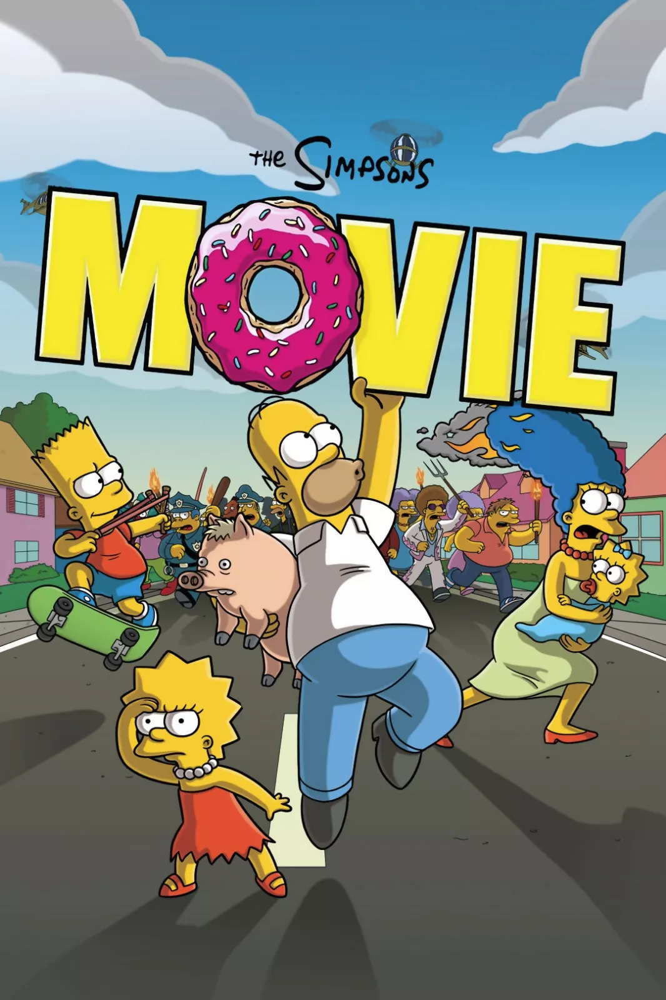

LES SIMPSONS
Les Simpson (The Simpsons) est une série télévisée d'animation américaine crée par Marc Groening et diffusée depuis le 17 décembre 1989 sur le réseau de l'entreprise américaine Fox Broadcasting Company. Elle met en scène les Simpson, stéréotype d'une famille de classe moyenne 1.2. Leurs aventures servent une satire du mode de vie américain. Les membres de la famille, tous ayant la pigmentation de peau de couleur jaune, sont Homer, Marge, Bart, Lisa et Maggie. Depuis ses débuts, la série a récolté des dizaines de récompenses, dont vingt-quatre Primetime Emmy Awards, vingt-six Annie Awards et un Peabody Award. Le Time Magazine du 31 décembre 1999 l'a désignée comme la meilleure série télévisée du XXe siècle et elle a obtenu une étoile sur le Walk of Fame d'Hollywood le 14 janvier 2000. "D'oh!", l'expression d'abattement d'Homer Simpson, est entrée dans la langue anglaise. L'influence des Simpson s'exerce également sur d'autres sitcoms. En 2007, Les Simpson, le film, un long métrage basé sur la série, est sorti au cinéma et a recueuilli 257 millions de dollars américains en recettes brutes.
- 